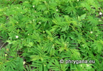

Fritsch, 1907")
| Phrygana: la Nature en Crète principalement, mais aussi d'ailleurs ... |
|  |
|
|
| Leucaena leucocephala | Julodis pubescens ivenii | Centaurium tenuiflorum |
| Espèces: 1323 --- Faune: 529 -- Flora: 769 -- Galles (Bacteria): 2 -- Champignons: 22 -- Lichens: 1 | |||||
| Nouveautés | |||||
| Fauna: | Closterotomus histrio histrio | Flora: | Bursera graveolens | Flora: | Cuphea carthagenensis |
| Fauna: | Crotophaga ani | Flora: | Jasminocereus thouarsii | Fauna: | Microlophus bivittatus |
| Flora: | Holcus lanatus | Fauna: | Tibellus macellus | Flora: | Croton scouleri |
| 23 juin 2022 |